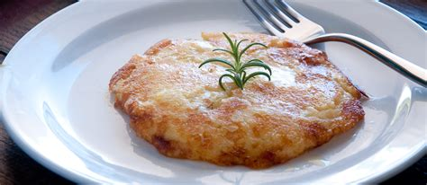
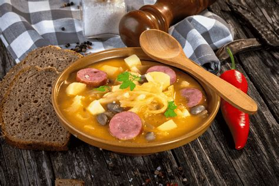
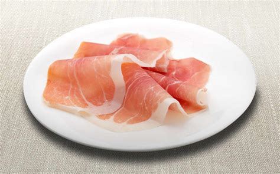
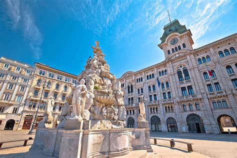
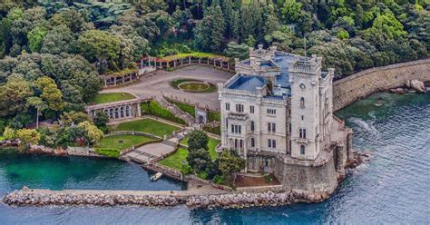
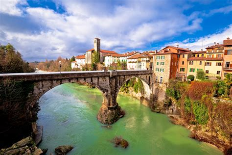
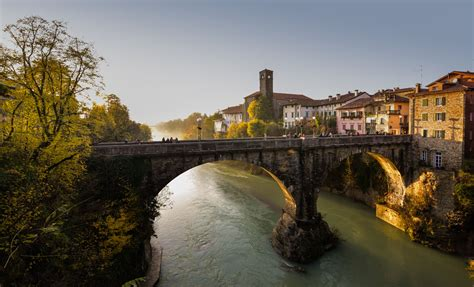
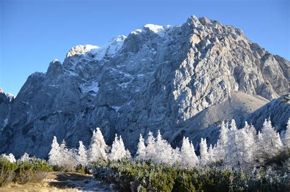
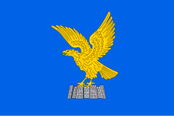
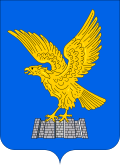

Friuli Venezia Giulia
Overview
Friuli Venezia Giulia is an autonomous region located in northeastern Italy, bordering Austria and Slovenia. It is known for its cultural diversity, mountain landscapes, Adriatic coastline, and historic cities like Trieste and Udine. The region blends Italian, Slovene, and Austrian influences, making it truly unique in the Italian cultural landscape.
Quick Facts
- Capital: Trieste
- Regional Languages: Italian, Friulian, Slovene, German
- Population: ~1.2 million
- Famous for: Historic towns, fine wines, mountains and lagoons
- Fun Fact: It’s the only Italian region with four officially recognized languages!
Famous Dishes
Frico

Jota

Gubana

San Daniele Ham

Famous Landmarks
Trieste

Miramare Castle

Udine

Cividale del Friuli

Julian Alps

When to Visit
The best time to visit Friuli Venezia Giulia is during the spring (April–June) and autumn (September–October), when the weather is mild and the landscapes are stunning. Winter is ideal for skiing in the Julian Alps, while summer is perfect for exploring the coast and enjoying cultural events.
Regional Symbols
- Flag: 
- Emblem: 